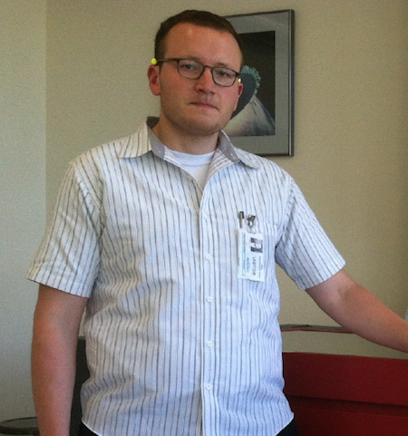

Alessandra received her B.S. and M.S degrees from the Politecnico di Milano, Milan, Italy, in 2005 and 2007, respectively, and her Ph.D. degree from the Massachusetts Institute of Technology (MIT), Cambridge, in 2012. She is currently a Telecommunication Engineer at NASA JPL (332H). She has developed communication systems for different university missions (CASTOR, ExoplanetSat, TerSat, REXIS, TALARIS). She has been with the Communication Architecture Research Group, NASA Jet Propulsion Laboratory, Pasadena, CA. Her current research interests include communication architecture design, statistical risk estimation, multidisciplinary design optimization, and mission scheduling and planning. She was a member of the organizing committee for iCubeSat 2012 (MIT, Cambridge), and she is a session chair at the IEEE Aerospace Conference.
Sara Spangelo
Sara Spangelo completed a Master's degree in aerospace engineering at the University of Michigan, focusing on optimizing trajectories for energy-efficient periodic solar-powered UAVs. She supported the Radio Aurora Explorer (RAX) CubeSat Missions from 2009-2012. She completed a Ph.D. in aerospace engineering at the University of Michigan in December 2012 focusing on developing a modeling and simulation framework for space systems, and optimization algorithms for scheduling small satellites and ground network. She consulted for AGI in the Spring of 2013, and has been working at NASA’s Jet Propulsion Lab (JPL) since then as the Lead systems Engineer for a Discovery-class concept, designing optimal observing scenario, performing trajectory design and optimization for CubeSats with novel propulsion technologies, and involved in a variety of small spacecraft proposals and missions.
Lorraine Weis
Lorraine is a graduate student pursuing a PhD in Aerospace Engineering with the Space Systems Design Studio at Cornell University. She holds a B.S. in Engineering Phyics from the Franklin W. Olin College of Engineering in Needham, MA. Her current research is in developing Chip-scale spacecraft for applications near Earth and beyond.
Rodrigo Zeledon
Rodrigo received his B.S. in Aerospace Engineering from the Massachusetts Institute of Technology in 2009. He is currently a fourth-year Ph.D. student at Cornell University's Space Systems Design Studio. His research interests include spacecraft dynamics, small spacecraft design and small-scale propulsion systems. His current work involves the development of an electrolysis propulsion system for CubeSats.
Derek Dalle
Derek Dalle is an aerodynamics engineer/researcher in NASA Ames' Applied Modeling and Simulation branch (Code TNA) with Science & Technology Corp. His current focus is aerodynamics for the Space Launch System using NASA's High-End Computing Capability efficiently. He received a Ph.D. from Michigan in 2013. His interests include various types of trans-atmospheric vehicles including air-breathing hypersonic engines, launch vehicles, reentry applications, and others. Previously he was a aerodynamics engineer at Raytheon Missile Systems in Tucson, Arizona.
Farah Alibay
Farah received her Bachelor's and Master's degrees from the University of Cambridge in Aerospace and Aerothermal Engineering in 2010, and her PhD in Space Systems Engineering from the Massachusetts Institute of Technology (MIT) in 2014. Her PhD research focused on the use of spatially and temporally distributed systems for the exploration of planetary bodies in the solar system, as well as developing tools for the rapid evaluation of mission concepts in early formulation. She is currently working as a systems engineer at NASA's Jet Propulsion Laboratory (JPL) in the Planetary Mission Formulation group.
Megan Fazio
Megan received her B.S. from Harvard University in Electrical Engineering and Computer Science in 2013. She is currently working as an Electronic Parts Engineer at NASA's Jet Propulsion Laboratory (JPL) in the Office of Safety and Mission Assurance. Her current work involves the analysis of EEE parts used on CubeSat missions.
Kristen MacNeal
Kristen received her B.S. from UC Irvine in Biomedical Engineering in 2013. She is currently working as an Electronic Parts Engineer at NASA's Jet Propulsion Laboratory (JPL) in the Office of Safety and Mission Assurance. Her current work involves the analysis of EEE parts used on CubeSat missions.
Lynn Nehme
Lynn is receiving her B.S.E in Mechanical and Aerospace Engineering from Princeton University. She interned at NASA's Jet Propulsion Laboratory in Team Xc, a concurrent engineering team for rapid design and analysis of small satellite mission concepts, and developed a communication and ground systems tool. She is currently building a small satellite system for autonomous 3D rendering of Resident Space Objects as part of her senior thesis.
Carlyn Lee
Carlyn is a software engineer for the Telecommunication Architecture Group at NASA Jet Propulsion Laboratory. She is involved in link budget analysis tools development and optimization for space communication and navigation. Her research interests include communication systems, networking architecture, and high-performance computations. She received her B.S. and M.S. degrees in computer science from the California State University, Fullerton in 2011 and 2012.
Travis Imken
Travis Imken received an M.S. in Aerospace Engineering from The University of Texas at Austin in 2014. His research focused on the development of the 3D-printed cold-gas attitude control system for the JPL INSPIRE CubeSatellites. While at UT Austin, Travis worked in the Texas Spacecraft Laboratory and supported many small satellite missions in various leadership roles, including the Bevo-1 picosatellite and the Bevo-2, ARMADILLO, and RACE CubeSats. He currently works as a Systems Engineer in the Advanced Design Engineering Group at the Jet Propulsion Laboratory. Travis serves as a systems engineer and model developer for the Team Xc concurrent design team. He also works as a systems engineer for the proposed interplanetary Lunar Flashlight and NEA Scout CubeSat missions. Travis is an avid skier and enjoys the outdoors.
Christopher Kitts
Dr. Christopher Kitts is an Associate Professor at Santa Clara University where he serves as the Director of the Robotic Systems Laboratory (RSL) and as Associate Dean of Research and Faculty Development within the School of Engineering. Over the past decade, Dr. Kitts has been the Mission Operations Director for a series of NASA small spacecraft, which are controlled on-orbit by RSL students using SCU's own distributed, internet-based command and control network. Through RSL, Dr. Kitts and his students also develop systems for conducting field missions with unmanned aircraft, terrestrial rovers, and marine robots. Prior to joining SCU, Dr. Kitts worked as a spacecraft autonomy engineer at NASA Ames Research Center, served in the U.S. Air Force as a mission controller for a constellation of Department of Defense spacecraft, and was a founder and the Graduate Student Director of Stanford's Space Systems Development Laboratory. Dr. Kitts is a Fellow of the American Society of Mechanical Engineers and holds a concurrent research appointment at the Monterey Bay Aquarium Research Institute. Dr. Kitts is a graduate of Stanford University, the University of Colorado, and Princeton University.
Luke Idziak

Luke Idziak is a researcher/designer in the NASA Ames Mission Design Division (Code RD) with Millennium Engineering & Integration Co. and works in the Mission Design Center and Ames Spaceshop Rapid Prototyping Lab. Current research and development areas include ultralight 3D printed batteries, laser based landslide detection systems, deployable smallsat sun shields, and cubesat separation mechanisms.